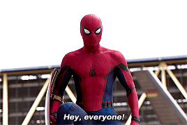
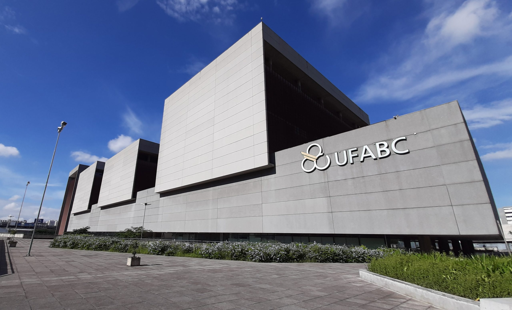

Apresentação
Olá, meu nome é... bom, eu não posso falar meu nome, então me chame como quiser. Eu tenho 19 anos, nasci no dia 30/01/2002 em São Mateus, Zona Leste de São Paulo, onde vivo até hoje. Essa página vai falar um pouco sobre mim, para você poder me conhecer sem me conhecer. Vou falar sobre meus hobbies, gostos, atividades e planos. Basicamente é isso, próximo tópico. Ps: Sou FANÁTICO por bolo de cenoura
Esportes
Futebol americano
Sou fanático por futebol americano, inclusive pratico no time Santo André Werewoves, na NFL toço para o time San Francisco 49ers pelo fato de eu ser apaixonado pela Califórnia.

Bom, como você pode ter visto o esporte sempre fez e sempre vai fazer parte da minha vida, é sem duvidas a coisa que eu mais gosto de fazer na vida. Sou eternamente grato aos meus Senseis de judô por desde criança terem me ensinado o caminho suave e os fundamentos que foram responsáveis pela minha educação.
Música
Queen
Sem dúvidas a minha banda favorita, que infelizmente nunca irei no show dele. Posso escuta-los pra sempre, ainda mais a minha música favorita: Bohemian Rhapsody, nome também do meu filme favorito. Eu e minha família temos uma ligação muito forte com Queen, por isso é uma banda tão especial pra mim.
Kings of Leon
Minha banda em atividade favorita, amo todas as músicas e um dos meu sonhos é ir no show deles, minha música favorita dessa banda é "On call" por ter um grave magnífico.
Sertanejo
Um dos meus estilos musicais favoritos, principalmente quando combinado com fim de semana e churrasquinho. Minhas duplas favoritas são: Jorge e Mateus, Henrique e Juliano e Mateus e Kauan, mas também gosto muito de um modão antigo.
One Direciton
Esse grupo tem um valor sentimental muito grande pra mim, pois eu lembro da minha irmã sempre que escuto. Todas as músicas são muito boas, minha favorita é "Little things".
Presente
Então, falando agora um pouco mais sobre mim, em 2019 me formei como técnico em mecatrônica na Etec Julio de Mesquita. Atualmente não trabalho mas estudo o dia inteiro, a minha rotina consiste em: de manhã acordo por volta de 8h00 e tomo um café da manhã, depois fico um pouco com meu irmão mais novo e vou para a aula do Proa que começa as 9h00, quando chega próximo de 12h15 eu almoço e troco de roupa, pois as 13h15 eu entro no SENAI, onde faço curso de Eletroeletronica, saio do Senai as 17h15 e chego em casa por volta das 18h40, tomo um banho e entro na aula da faculdade que começa as 19h00. Faço faculdade na Universidade Federal do ABC, atualmente curso Bacharel em Ciencia e Tecnologia para futuramente me especializar em Ciencia da Computação. A minha maior conquista foi ter sido a primeira pessoa da minha família a conseguir entrar em uma universidade federal.
Futuro
Pra finalizar falarei um pouco sobre minhas abições futuras e como eu planejo o meu aspecto profissional. A curto prazo, pretendo, assim quando terminar o Proa, conseguir um emprego de estágio ou jovem aprendiz em uma empresa de tecnologia na área de programação, isso me dará uma base muito legal do mercado e acrescentará muito positivamente na minha vida. Enquanto isso ainda estarei cursando minha faculdade, então pretendo ser efetivado nessa empresa enquanto eu vou me especializando. Após concluir a faculdade pretendo me consolidar como desenvolvedor full-stack. Tenho certeza que tenho todas as competências necessárias para realizar esse meu sonho, sou muito esforçado e estudioso, e possuo Soft-skills que são muito úteis no cenário da tecnologia, como boa comunicação e facilidade de aprendizagem.